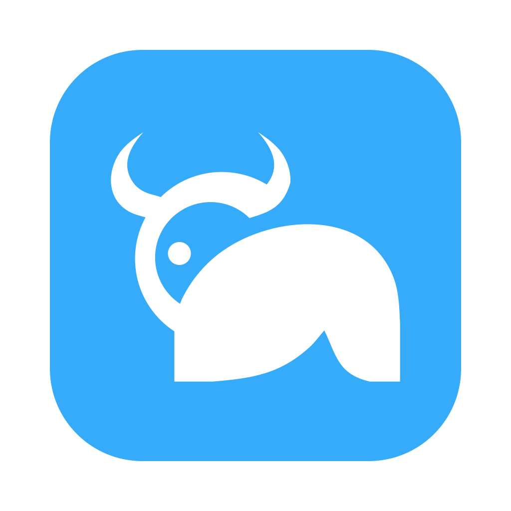

yesman
Yes-man Ships!
AI has a reputation for saying yes to everything. Put that yes-man energy to work: hire a yesman to help you ship to production.
yesman is a desktop tray app. Each yesman takes on one project, with a lead that talks with you and manages, and workers that do the work across whichever repositories the project needs.
A manager, not a coder.
Hire a yesman for a project, not a repository. You talk only to its lead. It hands the work to workers, manages them, and brings you only the calls it cannot make.
Example workspace
yesmen/my-project/
├── .yesman/
│ ├── board.json
│ ├── knowledge/
│ │ └── INDEX.md
│ └── sessions/
├── api/ # worktree
└── website/ # worktreeEach repository is cloned once into a shared pool of bare repositories. A yesman checks out the ones its project needs, a worktree and branch per worker.
- The lead only talks and manages
- It has no shell and never does the work itself. It turns your goal into tasks on a board and hands each to a worker, without waiting on any of them.
- It manages upward for you
- Workers bring their questions, failures and reports to the lead, which answers them itself. Workers never interrupt you.
- Only the hard calls reach you
- The lead does everything it can decide. What it cannot, it brings you together, once everything else is done.
- A project, not a repository
- A yesman works across whichever repositories its project needs, checked out from one pool that only yesman writes.
- It picks up where it left off
- Shared knowledge, the board and every agent’s session survive restarts.
- Coming next: always on
- A yesman connected to a channel, talking with users and customers, turning what they need into tasks, and shipping release after release.
Install yesman
Install git and pi 1.5 or later, with a model configured. yesman uses your usual pi configuration.
npm install -g @earendil-works/pi-coding-agentmacOS has been run. Linux and Windows builds are available but have not been runtime-tested. macOS downloads are signed ad hoc; Windows builds are unsigned.
Pull-request watching and service-key management are not built yet.